Frontend
사용자 경험과 유지보수성을 함께 고려한 웹 애플리케이션을 설계합니다.
- Next.js App Router · React · Vue
- TypeScript · SWR · React Query
- Server Component · SEO · Performance
FRONTEND · FULL-STACK · DEVOPS
프론트엔드를 중심으로 백엔드, 인프라, AI 서비스까지 제품의 전 과정을 연결합니다.
프로젝트 보기 ↘ABOUT ME
서비스의 화면만 구현하는 데 그치지 않고,
안정적인 운영까지 책임지는 개발자입니다.
웹퍼블리셔로 커리어를 시작해 프론트엔드 개발자로 성장했습니다. 커머스, 항공, 제조 도메인에서 화면 구현을 넘어 서비스 구조, 보안, 운영 효율과 배포 자동화까지 고려하며 설계·개발·운영을 주도했습니다.
Next.js와 TypeScript를 중심으로 Spring Boot, MSSQL, Docker, Kubernetes를 연결하고, 최근에는 Qdrant·OpenAI·LangGraph·n8n을 활용해 AI 검색과 업무 자동화를 실제 서비스에 적용하고 있습니다.
CORE SKILLS
사용자 경험과 유지보수성을 함께 고려한 웹 애플리케이션을 설계합니다.
프론트엔드 요구사항을 넘어 안정적인 API와 인증 흐름을 구현합니다.
검색과 반복 업무에 AI를 연결해 실제 사용 가능한 서비스를 만듭니다.
개발부터 배포, 운영, 디자인 시스템까지 제품의 생명주기 전체를 관리합니다.
SELECTED PROJECTS
각 프로젝트는 기술 도입 자체보다 실제 문제와 결과에 초점을 맞췄습니다.
GROUPWARE · FULL-STACK
전자결재, 게시판, 자원예약, 직원정보를 포함한 그룹웨어를 신규 구축했습니다. Next.js 프론트엔드부터 Spring Boot REST API, Stored Procedure 중심 업무 로직과 배포 환경까지 설계했습니다.
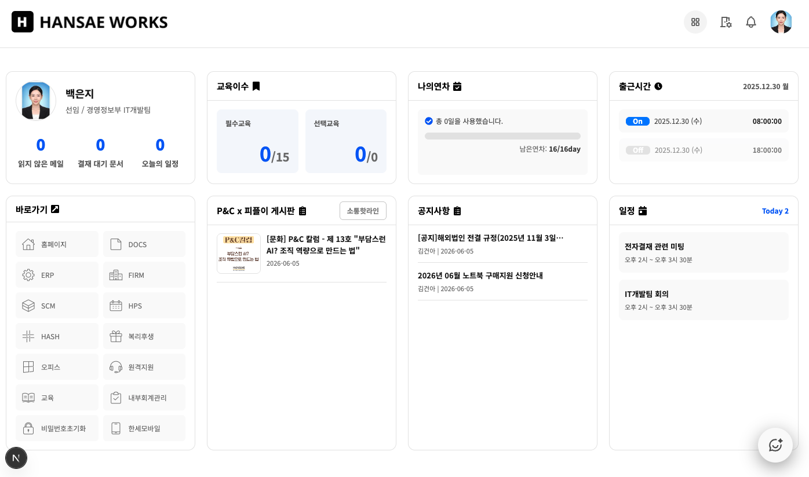
AI · BUSINESS AUTOMATION
ESS 문서를 벡터화한 RAG 챗봇과 n8n 업무 자동화 워크플로를 구축했습니다. 자연어 검색, 실시간 스트리밍 응답, 사내 API Tool Calling과 반복 업무 자동화를 하나의 운영 흐름으로 연결했습니다.
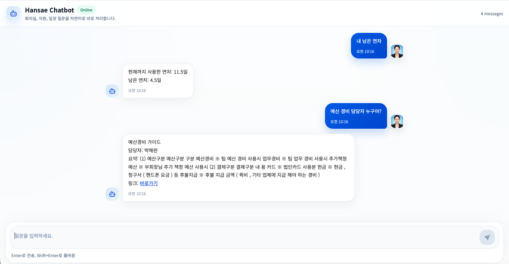
AI SEARCH · RECOMMENDATION
원단과 의류 데이터를 자연어로 탐색하는 의미 검색·추천 시스템입니다. 검색 결과의 신뢰도를 스스로 평가하고 낮은 경우 재검색하는 Self-RAG 흐름을 설계했습니다.
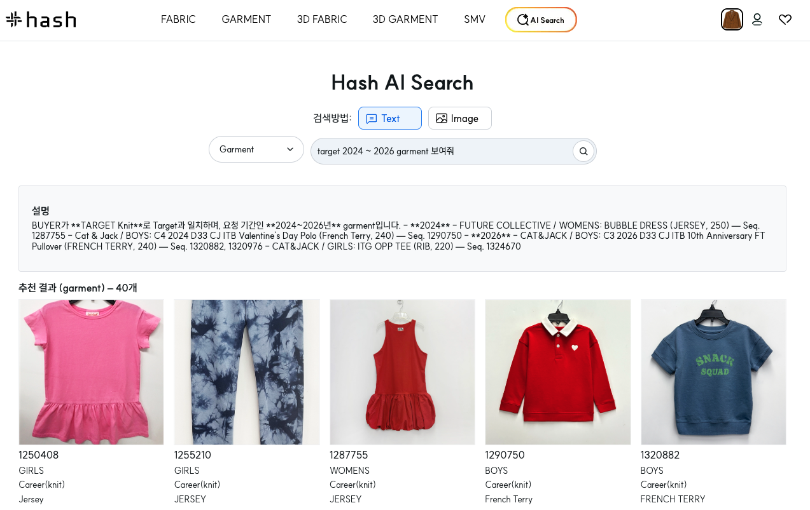
RECRUITMENT · FRONTEND
지원자가 모바일과 PC에서 안정적으로 채용 공고를 확인하고 지원할 수 있는 서비스를 구축했습니다. 사용자 경험과 개인정보 보호, 운영 편의성을 함께 고려했습니다.
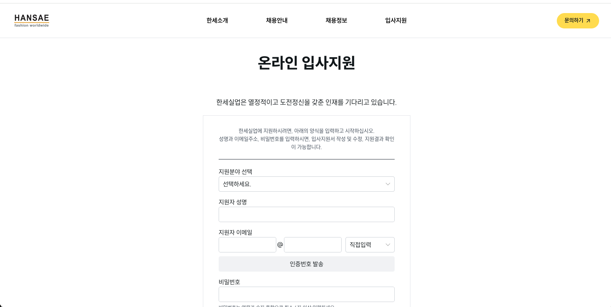
WEB MODERNIZATION · DEVOPS
ASPX·IIS 기반 4개 사이트와 관리자 시스템을 Next.js와 Linux 컨테이너 환경으로 전환했습니다. 보안 사고의 원인을 제거하고 성능, SEO, 운영 구조를 함께 개선했습니다.
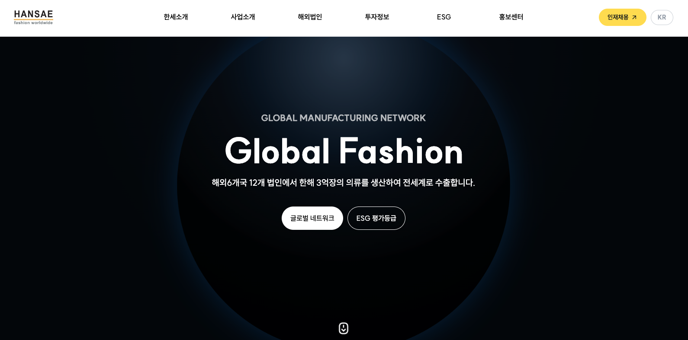
AUTHENTICATION · SECURITY
사용자 ID를 쿠키에 저장하던 구조를 제거하고 Access/Refresh Token 기반 인증 체계로 전환했습니다. 인증 성능과 보안성, 세션 제어 가능성을 함께 개선했습니다.
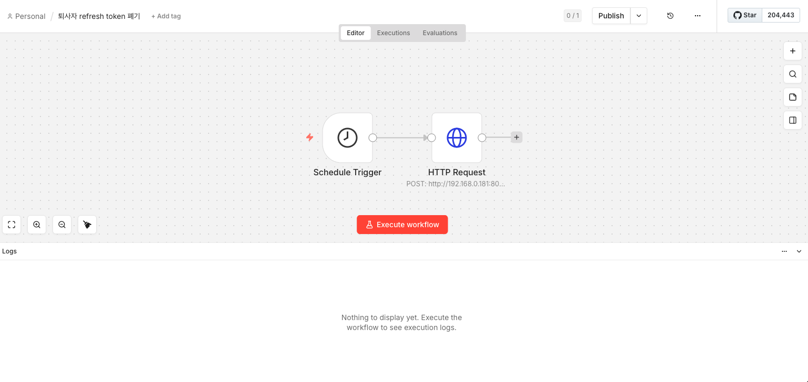
PLATFORM · 3D VIEWER
사내 원단 정보를 공유하고 탐색하는 플랫폼을 설계·개발했습니다. 인증부터 데이터 조회, Fabric 3D Viewer까지 핵심 사용자 흐름을 구현했습니다.
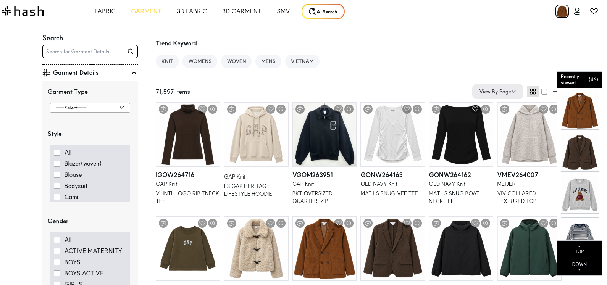
DASHBOARD · DATA VISUALIZATION
생산 현황을 빠르게 파악할 수 있도록 실시간 데이터를 시각화한 대시보드를 구축했습니다. 반복되는 데이터 패칭과 차트 구성을 재사용 가능한 구조로 정리했습니다.
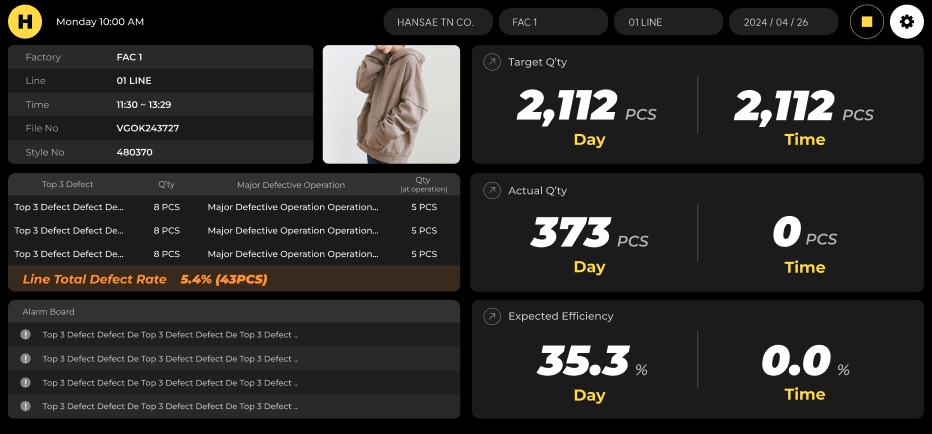
DESIGN SYSTEM · PACKAGE
서비스마다 반복되던 UI를 공통 컴포넌트로 표준화하고 문서화했습니다. 개발자와 디자이너가 같은 기준으로 UI 품질을 검증할 수 있는 기반을 만들었습니다.
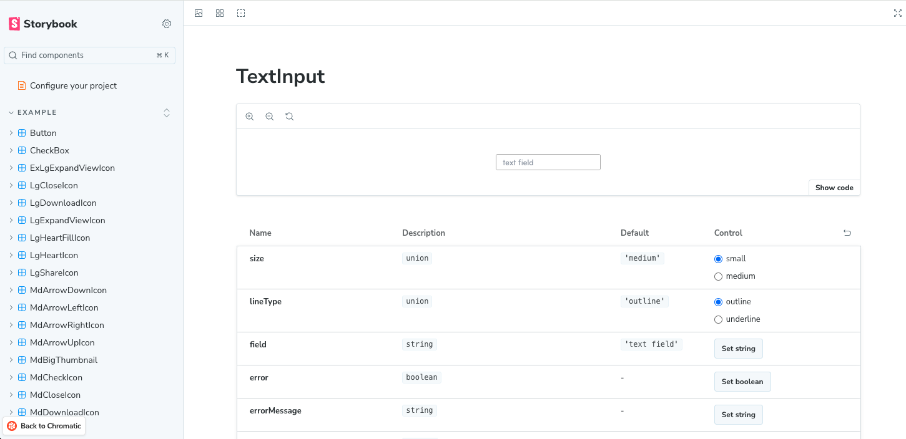
CI/CD · STANDARDIZATION
수작업으로 진행하던 배포를 파이프라인으로 전환하고, 서비스별로 달랐던 배포 절차를 표준화했습니다.
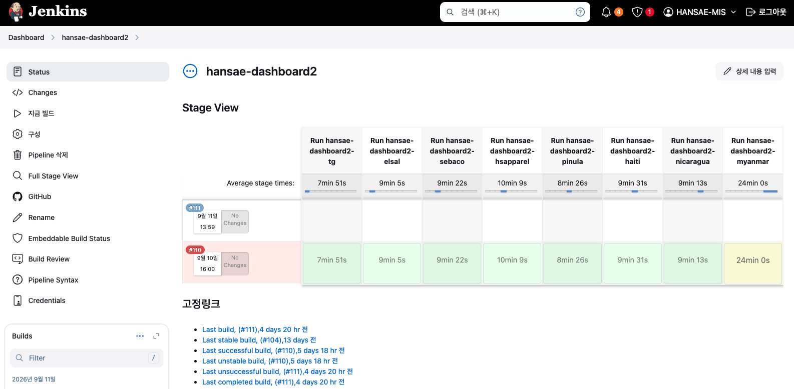
MIGRATION · PERFORMANCE
레거시 Vue2 기반 생산 스케줄 관리 시스템을 Vue3 생태계로 전환했습니다. 상태 관리와 빌드 구조, 캐시 전략을 함께 개선했습니다.
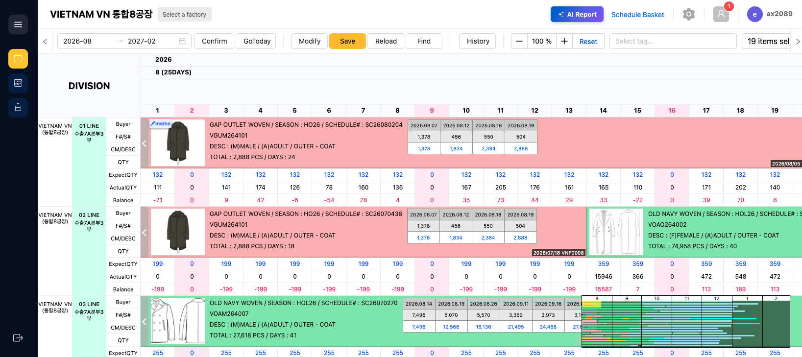
CAREER
한세실업 · IT개발팀 선임연구원
Next.js 기반 그룹웨어·Admin·플랫폼·대시보드 개발부터 Spring Boot·MSSQL 연동, Kubernetes 인프라, CI/CD, AI Search와 업무 자동화까지 서비스 전반을 담당합니다.
한진정보통신
대한항공 eDoc의 유지보수와 신규 기능 개발을 담당했습니다. 공통 UI와 재사용 모듈을 설계하고 TypeScript·반응형 UI·API 연동을 적용해 안정성과 유지보수성을 개선했습니다.
케이옥션
React 기반 라이브 경매 리뉴얼과 공식 홈페이지 운영을 담당했습니다. Redux-Saga 상태 관리, TypeScript, 다국어와 반응형 UI를 적용해 서비스 품질과 사용자 경험을 높였습니다.
어빌리지커피머신
HTML5·CSS3 기반 페이지 제작과 유지보수, PSD 디자인 시안의 반응형 UI 구현, 기존 마크업 구조와 스타일 개선을 담당하며 웹 표준과 UI 구현의 기초를 쌓았습니다.
LET'S BUILD SOMETHING SOLID
새로운 기술을 빠르게 익히고,
동료와 함께 더 높은 완성도를 만들어갑니다.